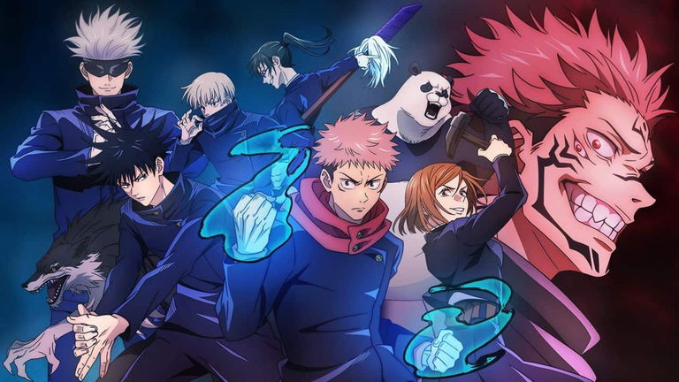
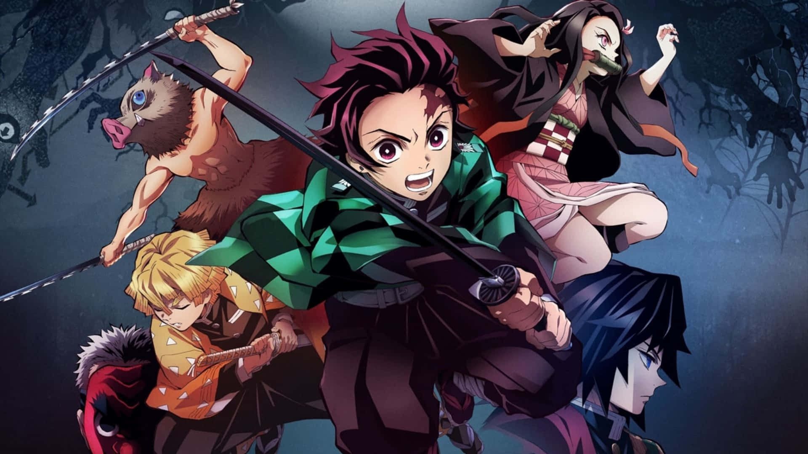
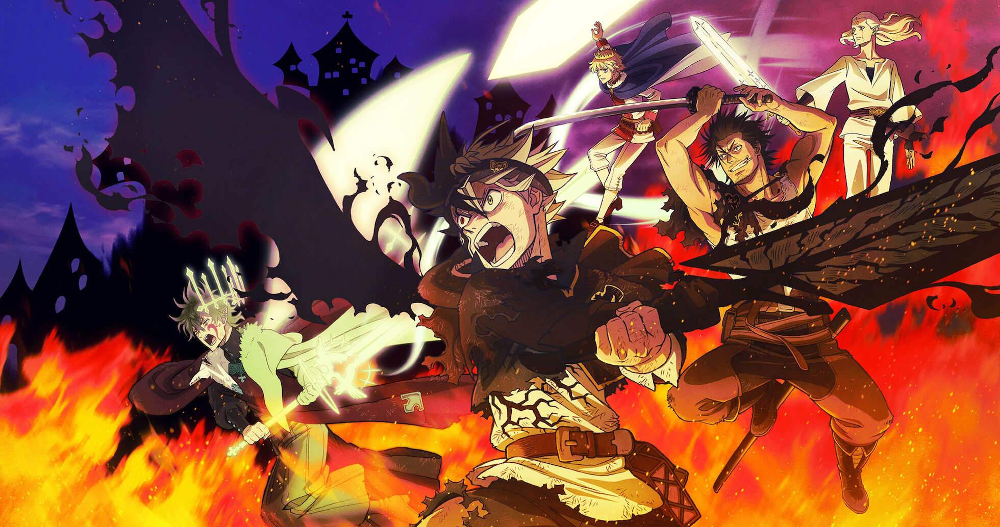
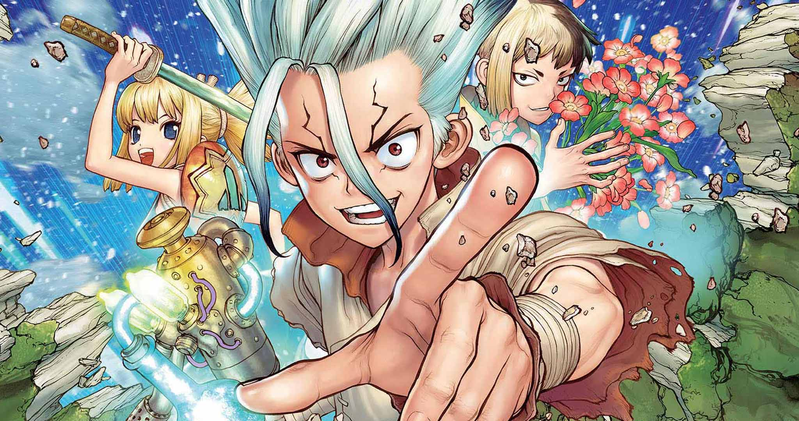
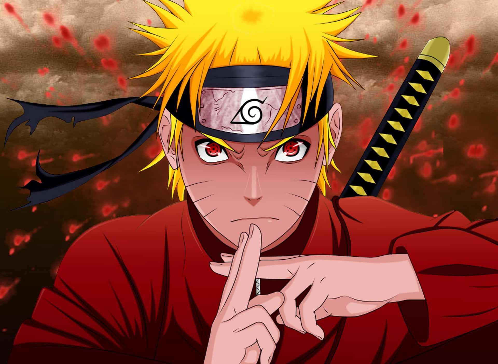
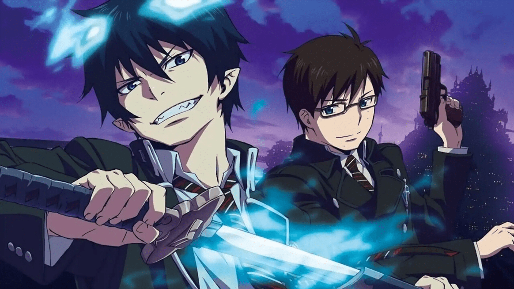
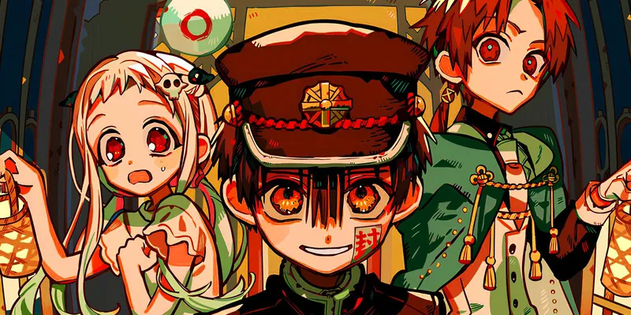
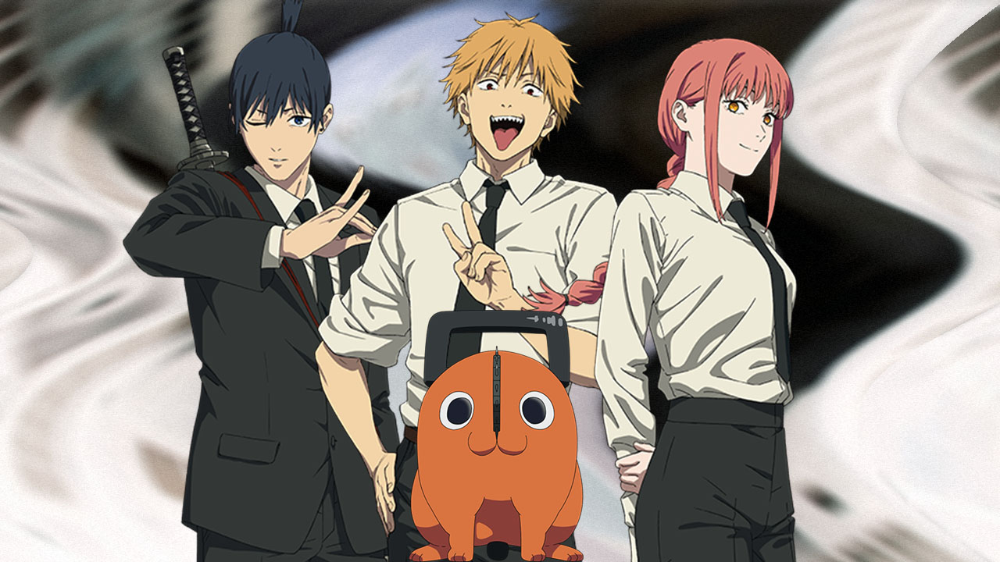

Animes populares en Crunchyroll

Jujutsu Kaisen
Un joven se une a una escuela de hechicería para luchar contra maldiciones.
- Temporada 1: 24 episodios
- Temporada 2: 23 episodios

Demon Slayer
Tanjiro busca salvar a su hermana y acabar con los demonios.
- Temporada 1: 26 episodios
- Mugen Train: 7 episodios
- Distrito Rojo: 11 episodios

My Hero Academia
Izuku Midoriya lucha por convertirse en héroe en un mundo con superpoderes.
- Temporadas 1-6: 13-25 episodios c/u

Black Clover
Dos huérfanos compiten por convertirse en el Rey Mago.
- Total: 170 episodios

Boruto
La nueva generación de ninjas enfrenta amenazas aún mayores.
- Temporada única: 293 episodios

Dr. Stone
La humanidad revive tras milenios y empieza desde cero con ciencia.
- Temporadas 1-3: 11-24 episodios

Naruto Shippuden
Naruto crece mientras lucha por convertirse en Hokage y proteger su aldea.
- 21 temporadas, 500 episodios

Blue Exorcist
Un chico descubre que es hijo de Satán y decide luchar contra él.
- Temporada 1: 25 episodios
- Kyoto Saga: 12 episodios

Hanako-kun
Un espíritu encantador habita el baño de una escuela con secretos oscuros.
- Temporada 1: 12 episodios

Chainsaw Man
Denji es un cazador de demonios con una motosierra por cabeza.
- Temporada 1: 12 episodios